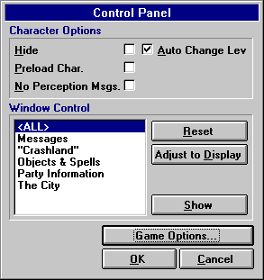

Control Panel

A character can access the Control Panel by Pressing F10 in either the City or Dungeon. From here, you can set various options.
Available options
Hide
Setting this option to True will make it so that no other character's can pick you up and carry you anywhere.
Preload Character
If you select this option, the character will be automatically loaded (without verification of the password) the next time the gme is started.
No Perception Msg.
Selecting this option will disable any perception messages (i.e. "You are pretty sure you are standing on an Anti-Magic square") while you are walking through the dungeon.
Auto Change Lev.
Turning this on will cause the Automap to automatically update the map to reflect what level the character is always on (if character is not lost).
No Party Sound
Selecting this will disable all background combat sounds (from other characters and companions in the party).
Available Functions
Window Control
With this section, a player can reset the size of one or all windows back to the original size. One can also resize (adjust) windows to match the current resolution by clicking on the Adjust to Display button.
Game Options
This will display the Game Options screen, allowing the user to set volume, etc.
Move to the next section to read the Hints & Tips.
Move to the previous section to read about Commands.
M1: "The Depths of Dejenol" is a Trademark of Decklin's Domain Ltd and is © Copyright 1994-2026 All Rights Reserved